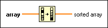

Sort 1D Array Function
Owning Palette: Array VIs and Functions
Requires: Base Development System
Returns a sorted version of array with the elements arranged in ascending order. If array is an array of clusters, the function sorts the elements by comparing the first elements. If the first elements match, the function compares the second and subsequent elements. The connector pane displays the default data types for this polymorphic function.

 Add to the block diagram Add to the block diagram |
 Find on the palette Find on the palette |